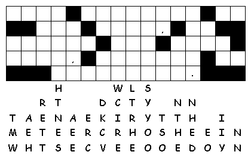

This week's lessons: Jonah 3:1-5, 10 Psalm 62:5-12 1 Corinthians 7:29-31 Mark 1:14-20
This
week's lessons: Jonah
3:1-5, 10 Psalm
62:5-12 1
Corinthians 7:29-31 Mark
1:14-20
Elementary School Pew-work
H
I S C W T C H O W
|
(Jonah 3:10) When God saw what they did, how they turned from their evil ways, God changed his mind about the calamity that he had said he would bring upon them; and he did not do it. (NRSV) |
Word List |
from http://www.efree.mb.ca/lectionarypuzzles free to distribute for free with this notice. Words are in a straight line left to right or top to bottom |
||
1. What did Jonah do when
he became angry at
God?
_____________________________________________________________
2. Even while Jonah was
angry, what did God do for
him?
_____________________________________________________________
3.
Who did God care
about?
_____________________________________________________________
Questions taken from Sunday School Lessons; http://www.sundayschoollessons.com
|
Created by Puzzlemaker at DiscoverySchool.com |
|---|
Next week: Deuteronomy
18:15-20, Psalm
111, 1
Corinthians 8:1-13,
Mark
1:21-28
.